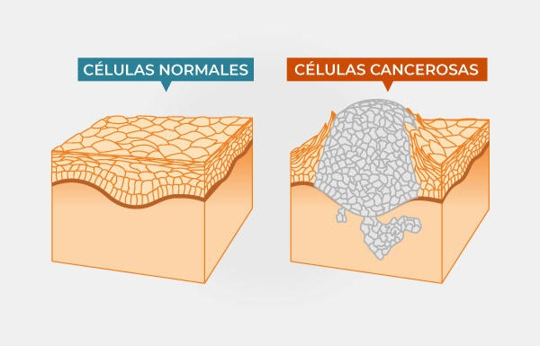
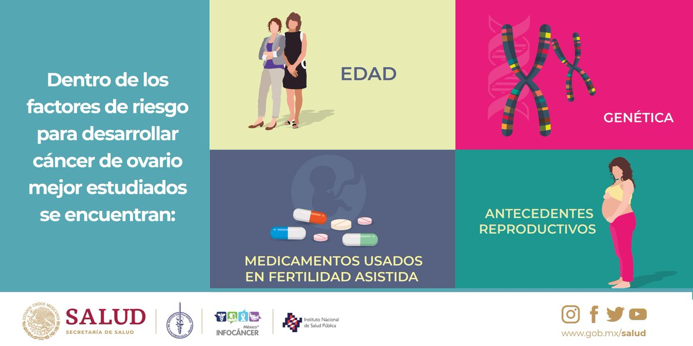
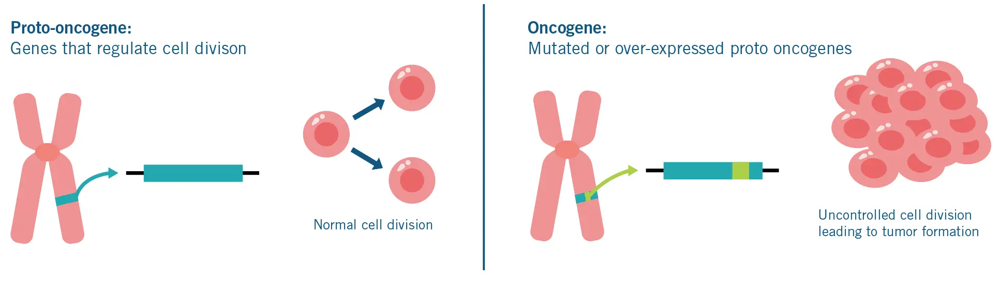
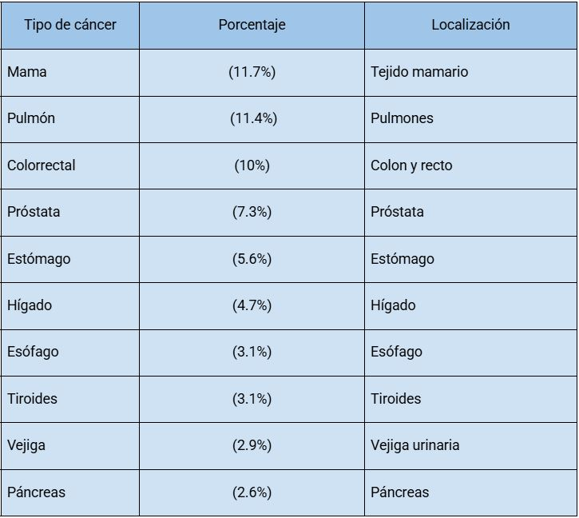

Cáncer – Una Mirada Integral y Actual
¿Qué es el cáncer?
El cáncer es el nombre común que recibe un conjunto de enfermedades caracterizadas por el crecimiento descontrolado y la diseminación de células anormales en el cuerpo. Según la definición de Rupert Allan Willis, una neoplasia es una masa anormal de tejido cuyo crecimiento excede al de los tejidos normales y persiste incluso después de que cesa el estímulo que le dio origen. Si no se trata, el cáncer puede invadir tejidos cercanos y, a través de la sangre y el sistema linfático, formar tumores secundarios (metástasis), lo que puede llevar a la muerte del paciente. Se conocen más de cien tipos diferentes de cáncer, siendo los más comunes los de piel, pulmón, mama y colorrectal
Factores ambientales y genéticos
¿Qué son?
Factores ambientales: Son elementos externos que aumentan el riesgo de cáncer, como el tabaquismo, radiación, infecciones virales (como el VPH), dieta, exposición a químicos, contaminación ambiental, radiación ultravioleta y radiaciones ionizantes.
Factores genéticos: Son alteraciones heredadas en los genes que predisponen al cáncer. Algunas familias presentan un riesgo mayor de desarrollar ciertos tipos de cáncer por mutaciones heredadas, como en los genes BRCA1/2 (cáncer de mama y ovario) o el síndrome de Lynch (cáncer colorrectal).
Ejemplos y cómo influyen:
- Fumar tabaco aumenta el riesgo de cáncer de pulmón, boca, garganta, esófago, riñón y vejiga.
- Exposición al sol (radiación ultravioleta) incrementa el riesgo de cáncer de piel.
- Virus como el VPH pueden causar cáncer cervicouterino.
- Mutaciones hereditarias como BRCA1/2 elevan el riesgo de cáncer de mama y ovario.
- Exposición a asbesto y pesticidas se asocia a cáncer de pulmón y leucemias, respectivamente.
Estos factores pueden actuar en conjunto, multiplicando el riesgo de desarrollar cáncer.
Oncogenes y genes supresores de tumores
- Oncogenes: Son genes que, al mutar, promueven el crecimiento celular descontrolado. Proceden de la mutación de protooncogenes, que normalmente regulan el crecimiento y la diferenciación celular. Ejemplos: RAS, MYC.
- Genes supresores de tumores: Son genes que normalmente frenan el crecimiento celular; su inactivación contribuye al desarrollo del cáncer. Ejemplos: TP53, RB. 
Cánceres más comunes
A nivel mundial (2024, GLOBOCAN):
En México (2024, INEGI/Globocan).

Marcadores moleculares
Un marcador molecular es una molécula (proteína, gen, metabolito) detectada en sangre, tejidos u otros fluidos corporales que indica la presencia o el pronóstico de cáncer. Ayudan en la detección temprana, el seguimiento y la selección de tratamientos personalizados.
Ejemplos:
- PSA (antígeno prostático específico) – Cáncer de próstata
- CA-125 – Cáncer de ovario
- CEA (antígeno carcinoembrionario) – Cáncer colorrectal
- HER2 – Cáncer de mama
- BRCA1/2 – Cáncer de mama y ovario hereditario
- EGFR – Cáncer de pulmón
- KRAS – Cáncer colorrectal, pulmón
- ALK – Cáncer de pulmón
- AFP (alfa-fetoproteína) – Cáncer de hígado
- BCR-ABL – Leucemia mieloide crónica
Infografia de interes
Virus del Papiloma Humano (VPH) y Cáncer Cervicouterino.
¿Qué es el VPH?
El Virus del Papiloma Humano (VPH) es un grupo de más de 200 virus relacionados, de los cuales al menos 14 son de alto riesgo y pueden causar cáncer. Es la infección de transmisión sexual más común en el mundo.

El VPH puede causar verrugas genitales y, en casos de infección persistente con tipos de alto riesgo, cáncer cervicouterino, así como cáncer de ano, pene, vulva, vagina y orofaringe.
Clasificación del virus
- VPH de bajo riesgo: Tipos 6 y 11 (causan verrugas)
- VPH de alto riesgo: Tipos 16 y 18 (asociados al 70% de cáncer cervicouterino)

Mecanismo molecular de infección.
El VPH infecta células epiteliales a través de microlesiones en la piel o mucosa. Los genes virales E6 y E7 inactivan proteínas supresoras de tumores (p53 y pRb), permitiendo la proliferación celular y acumulación de mutaciones, lo que puede llevar al cáncer.

- Infección aguda: Asintomática o verrugas genitales.
- Infección persistente: Lesiones precancerosas (displasia cervical) y, con el tiempo, cáncer cervicouterino.
Cuadro Clínico
- La mayoría de los casos son asintomáticos.
- Verrugas genitales: protuberancias blandas en los genitales, ano o boca.
- Síntomas de cáncer: sangrado anormal, dolor pélvico o flujo inusual.
- Cáncer orofaríngeo: dolor persistente de garganta, dificultad para tragar.
Diagnóstico
- Prueba de Papanicolaou (Pap): Detecta células anormales en el cuello uterino.
- Prueba de VPH: Identifica la presencia de ADN del virus.
- Colposcopia y biopsia: Para confirmar lesiones sospechosas.
Tratamiento y prevención
- Tratamiento: Depende del estadio, e incluye extirpación de lesiones, cirugía, radioterapia y quimioterapia.
- Prevención: Vacunación contra VPH (niñas y niños), uso de preservativo, tamizaje regular (Pap y VPH)
Video Informativo
Pronóstico
La mayoría de las infecciones por VPH se resuelven solas. Cuando progresa a cáncer y se detecta temprano, el pronóstico es favorable (>90% de supervivencia a 5 años). Sin tratamiento, puede ser mortal.

Integrantes del equipo:
- Canales Marcos Iran
- Guerrero Gomez Angel Gabriel
- Loaiza Nava Fernada
Bibliografía
Articulo del Cancer
-World Health Organization. (2024). https://www.who.int/news-room/fact-sheets/detail/human-papillomavirus-(hpv)-and-cervical-cancer
-Centers for Disease Control and Prevention. (2024). HPV and Cancer. Recuperado el 18 de junio de 2025, de https://www.cdc.gov/hpv/parents/cancer.html
-Bosch, F. X., Lorincz, A., Muñoz, N., Meijer, C. J. L. M., & Shah, K. V. (2020). The causal relation between human papillomavirus and cervical cancer. Journal of Clinical Pathology, 73(2), 101–109. https://doi.org/10.1136/jclinpath-2019-206313
-Arbyn, M., Weiderpass, E., Bruni, L., Sanjosé, S. de, Saraiya, M., Ferlay, J., & Bray, F. (2021). HPV vaccination: A powerful tool to prevent cervical cancer. The Lancet, 397(10274), 2136–2138. https://doi.org/10.1016/S0140-6736(21)00603-X
-Instituto Nacional de Estadística y Geografía (INEGI). (2024). Estadísticas de cáncer cervicouterino en México. Recuperado el 18 de junio de 2025, de https://www.inegi.org.mx
-Schiffman, M., & Castle, P. E. (2023). The promise of global cervical-cancer prevention. New England Journal of Medicine, 388(14), 1324–1332. https://doi.org/10.1056/NEJMp2301474
Articulo del VPH
-Armstrong, G. (s.f.). El cuerpo humano · Un mundo de papel. Contrapunto.
-Barbero Alcocer, I. (2018). Las nuevas formas de violencia colectiva. Análisis del ciberbullying entre adolescentes. En R. González Fernández (Ed.), Violencia colectiva: estrategias políticas del odio (pp. 245-267). Catarata.
-Carlson, N. R., & Birkett, M. A. (2018). Fisiología de la conducta (12a ed.). Pearson.
-Gilmartín, M. A. (2010). Ambientes escolares. En J. I. Aragonés & M. Amérigo (Eds.), Psicología ambiental (3a ed., pp. 221-237). Pirámide.
-Hidalgo, D., & Torres, F. (2016). La navaja suiza del reportero: herramientas de investigación en la era de los datos masivos. Consejo de la Prensa Peruana.
-Luengo Navas, J., & Otero Urtza, E. (2004). Teorías e instituciones contemporáneas de educación. Biblioteca
-Luengo Navas, J. (s.f.). La educación como hecho. Universidad de Granada. Recuperado el 20 de junio de 2025, de https://www.ugr.es/~luengo/educacionhecho.pdf
-Oatley, K. (2016). La literatura como simulador de vuelo social: efectos sobre la empatía y la cognición. Ciencia UANL, 19(2), 180-187. Recuperado el 20 de junio de 2025, de https://www.cienciauanl.mx/2016/06/la-literatura-como-simulador-de-vuelo-social/